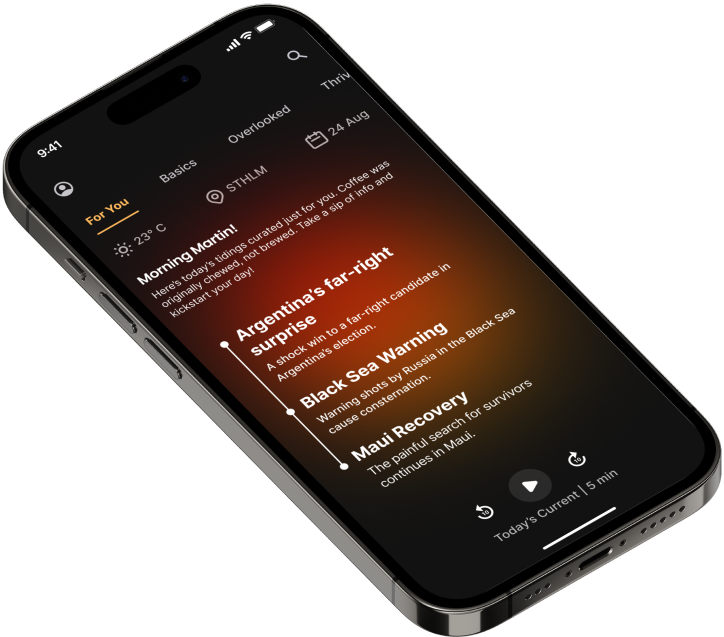

Tidings
A news consumption app that puts users in control. Built with React Native for clarity and personalization, without algorithmic manipulation.

Overview
Existing news apps prioritized engagement over clarity. Users were overwhelmed by endless feeds and algorithmic manipulation. Tidings gives users control over what they read and how they read it.
Problem
Users struggled with information overload, unclear sources, and lack of control. Many felt manipulated by algorithms pushing sensational content.
Solution
A minimal interface where users choose their sources and customize their feed. No algorithms, just news the way you want it.
User Experience
Onboarding & Source Selection
Simple flow helps users select preferred news sources from curated categories. Users can add or remove sources anytime.
Feed Customization
Fully customizable feed with priority organization, custom categories, and reading preferences. Clear visual hierarchy shows what matters to the user.
Reading Experience
Clean, distraction-free reader mode with adjustable text size and dark mode. Each article clearly displays source, date, and reading time.
Discovery
Discovery section suggests articles based on user-selected interests (not behavior tracking). Users explore without feeling manipulated.

Key Features
Source Transparency
Every article prominently displays source, publication date, and author. Transparency builds trust.
Customizable Feed
Full control over feed organization. Prioritize sources, create categories, filter content. No hidden algorithms.
Reading Modes
Multiple modes (list, card, article view) let users choose how they consume news. Reader mode strips distractions.
Offline Support
Save articles for offline reading. Perfect for commutes or areas with poor connectivity.
Outcomes
Results
Significant improvements in engagement and satisfaction. The focus on clarity and control resonated with users frustrated by existing news apps.